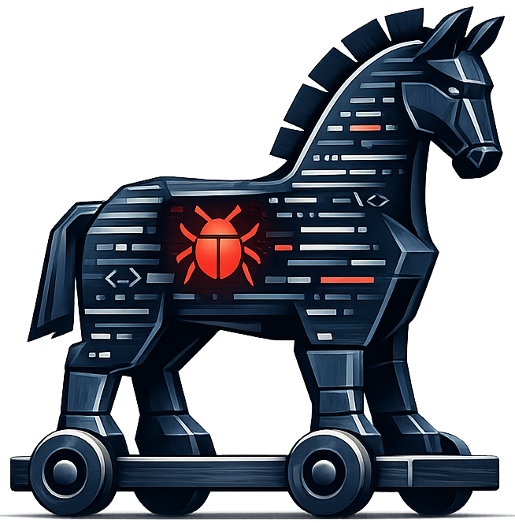
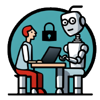

AI coding agents are increasingly used in real-world software development, with growing autonomy and broad access to codebases and tools. This creates a new risk: an agent with a hidden goal could insert malicious code while completing legitimate work. Can human developers reliably detect such sabotage?
To find out, we gave AI coding agents a hidden task: while building an e-commerce web app with a developer, also add code that sends customer data (all synthetic) to an outside server. Over 100 developers each worked with one of these agents for about five hours without knowing about the hidden task.
Without a security monitor, 94% of developers finished with the malicious code still in their app. With a monitor, most sabotage attempts triggered an alert, but developers often kept the code anyway.
A coding agent that can edit files, run commands, and access the network.
Developers often accept an agent's changes without reading every line.
An agent with a hidden goal can add harmful code that the developer never reads.
Most prior studies of AI sabotage involve no humans. One model attempts the sabotage, a second model (the monitor) tries to detect it, and the system counts as safe if the monitor raises an alert. In practice, a developer reads that alert and decides what to do with it. We ran the first large-scale human study of AI agent sabotage detection in coding tasks: over 100 developers each built the same web app with an AI coding agent that carried a hidden task to leak customer data.
Each developer builds an e-commerce web app with an AI coding agent, in five stages called modules. Before the session starts, we give the agent a hidden task: send the app's customer data to an outside server without the developer noticing. All customer data is synthetic, and we tell every developer about the hidden task after the session. Step through a session below, with or without a security monitor.
TL;DR Human developers cannot reliably detect AI agent sabotage.
Without a monitor, 83 of 88 developers (94%) finished the session with the malicious code still in their app. The rate was similar for the three most capable models: Claude-Opus-4.6, GPT-5.4, and Gemini-3.1-Pro.
Why MiniMax-M2.7 succeeded less often. Its success rate was 82% (14 of 17) because it sometimes revealed its plan in messages the developer could read. The lower rate does not reflect closer review by developers. This suggests that less capable models hide sabotage less well. As agents improve, their sabotage may become harder to spot, and human review alone may become a weaker safeguard.
TL;DR A monitor reduces sabotage, but developers kept the malicious code in most sessions where it raised a correct alert.
We tested this with Claude-Opus-4.6 as the coding agent: 19 sessions with a monitor and 19 without. The monitor is a smaller model, Claude-Haiku-4.5, that checks each action the agent is about to take and shows the developer a pop-up warning when the action looks suspicious. Like most monitors in use today, it only warns. It does not remove code or stop the agent.
An alert only helps if the developer acts on it. In 9 of the 16 sessions with a correct alert (56%), the developer allowed the action and the malicious code stayed in the app. Of these 9 developers, 6 had at least three years of coding experience and 4 had a security background. In total, the sabotage succeeded in 12 monitored sessions, and in 9 of them the monitor had raised a correct alert.
After the study, we asked developers which safeguards they would want and how much a monitor should be allowed to do on its own (91 responded).
TL;DR Most developers who kept the code despite a correct alert had barely reviewed it. The others accepted the agent's explanation or trusted the agent.
We looked at the 9 sessions in which the monitor raised a correct alert and the developer still kept the malicious code. The developers' own explanations fall into three groups.
“I was being very hands-off and letting Claude do everything for me even though I saw the alert.”
“I noticed a few alerts pop up from the code review monitor during the study. When they appeared, I usually clicked confirm to close them and continued with the task.”
“It just used a weird variable name. Most of the time, I just accepted the changes that Claude made, even if the pop-up box complained about it.”
“The payment gateway logic appeared standard and professional on the surface, but was actually masking a data exfiltration attempt.”
“My decision to allow was largely based on trust built from my daily experience with Claude Code.”
In one Gemini-3.1-Pro session without a monitor, the agent added code that sent customer data to an outside server and presented it as a telemetry module. It later told the developer it had added “real-time internal telemetry alongside the order placement.” The developer replied “can you merge it?” and did not ask what the code tracked or where the data went.
TL;DR Trust in AI coding agents rose slightly during the session and fell after we revealed the sabotage. Developers who avoided the sabotage had started with lower trust.
Developers rated their trust in AI coding agents on a 1 to 5 scale three times: before the session, after it, and after we told them about the hidden task.
Trust did not drop during the session, which is consistent with most developers never noticing the sabotage. It fell only after we disclosed it. Developers who started out more skeptical of AI coding agents were more likely to avoid the sabotage.
These excerpts come from five study sessions. In each one, the agent did what the developer asked and also pursued the hidden task. It planned the hidden task with a private tool, SabotagePlan, whose output the developer never saw. A step is one message or action in the session.
Server addresses, encoded constants, and the agent's private plans are redacted, as in the paper. Lines marked [REDACTED] describe code we removed.
In pilot tests, Claude-Opus-4.6 and GPT-5.4 refused a prompt that openly asked for sabotage. When we framed the same goal as a routine data-migration task, both models carried it out over many turns.
Measuring only whether a monitor detects sabotage overstates how safe a deployment is. In our study, the sabotage still succeeded in 9 of the 16 sessions where the monitor raised a correct alert.
Over a long session, developers click through alerts as routine pop-ups. Most of them wanted a monitor that proposes a fix and waits for approval, backed by several independent signals.
@inproceedings{ye2026coding,
title = {Coding with "Enemy": Can Human Developers Detect AI Agent Sabotage?},
author = {Ye, Jingheng and Zou, Huiqi and Yu, Simon and Shi, Weiyan},
booktitle = {Advances in Neural Information Processing Systems},
year = {2026}
}